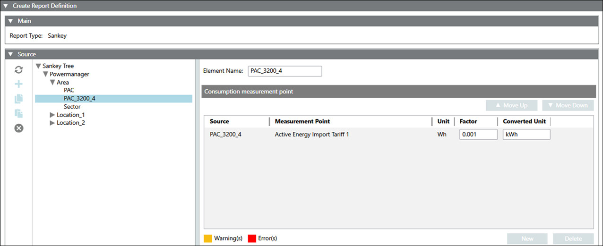
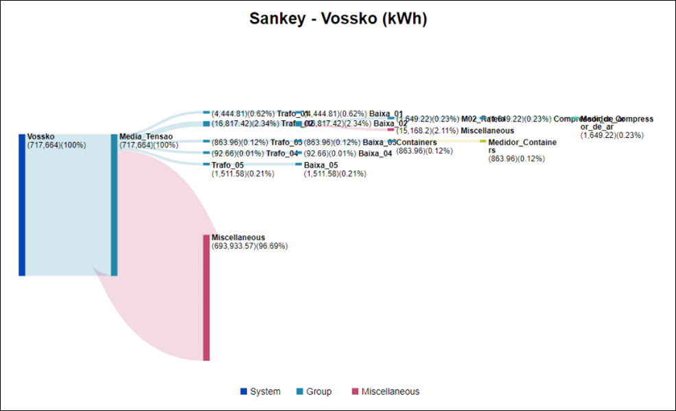
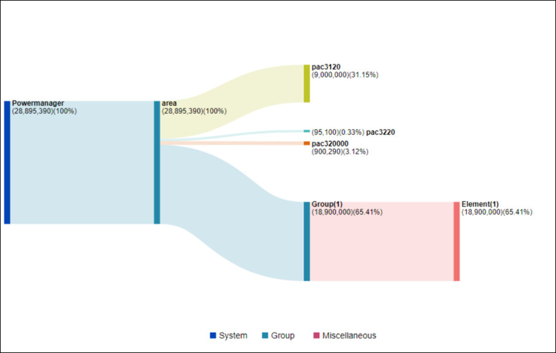
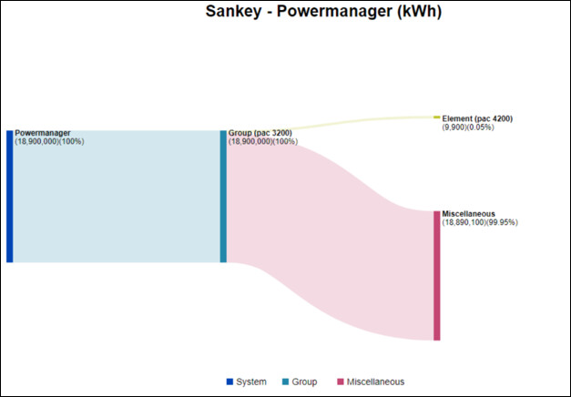
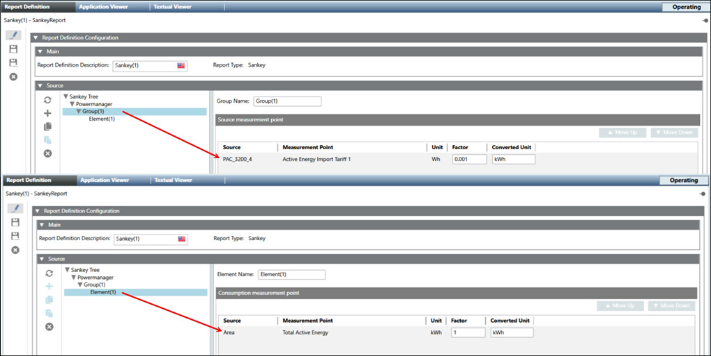
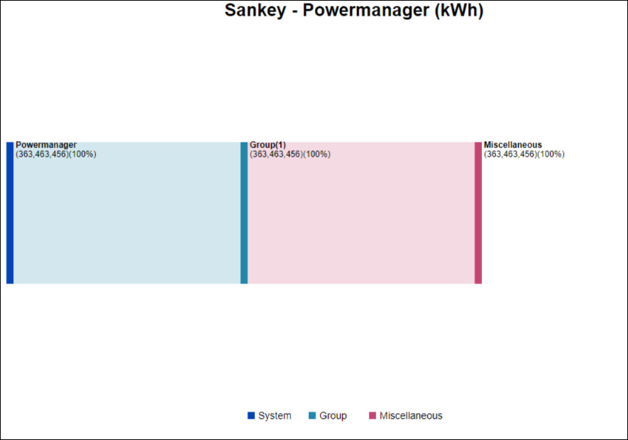
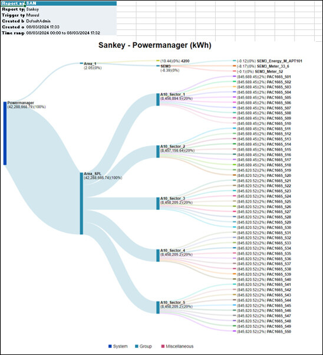

Configure the Sankey Report
- You have selected the Sankey report type for configuration.
- The Report Definition configuration page displays.
- To configure the Sankey report perform any of the following steps:
- In the Source expander, click the Sync icon to synchronize the sources in the Powermanager node with the Sankey Tree node.
- In the Source expander, drag-and-drop Powermanager [System] or [Area] or [Sector] or [Device] or click New to add a source to the selected group/element in the Sankey tree.
For Logical devices, the Sync option is not supported. To add logical devices, drag and drop the devices into the Source expander.
NOTE: Skip step 5 and proceed directly to step 6 when adding the source using the drag-and-drop method. - Enter the name of the root node in the Root Name field.
- By default, the Root Unit field is set to kWh and, you can modify it as needed.
- Select a source from the Source drop-down list for which the report needs to be generated.
- Enter values into the following columns:
- Select the required measurement point from the drop-down list under the Measurement Point column.
- Unit
- Factor
- Converted Unit - Click Save
 .
.
NOTE: If the selected measurement point is not archived, a warning message will be displayed. You can save the report definition with warning. However, if the measurement points are not archived, the generated reports will not have any values. - The Save Object As dialog box displays.
- Enter a name and description and click OK.
- The Sankey report definition is configured.


You can create a new node within the Sankey tree after the use of the Sync function.
Notes for configuring the Sankey report
While configuring the Sankey report, make sure to avoid the following configurations provided below to get the best results:
Scenario 1
If the Sankey tree contains a higher value group with multiple subgroups of smaller value, and sub-elements for these subgroups with even smaller values, it will result in a Sankey diagram as shown below.

Scenario 2
If the Sankey tree contains a smaller value group with an element of higher value, then the element value will override the group value, resulting in a Sankey diagram as shown below.

Scenario 3
If the Sankey tree contains a higher value group with an element of smaller value, then the remaining value of the group will create a Miscellaneous element, resulting in a Sankey diagram as shown below.

Adding more branches to the smaller element will result in clustering of branches.
Scenario 4
If the root/group level sources are added under the element level, the report will be generated as shown below. In other words, root or group level sources should not be added as an element source.
Example for the configuration

Result for the configuration

To get the best results in a Sankey report, avoid configuring the Sankey tree in the ways mentioned above. For the proper configuration, the Sankey diagram will be generated as shown below.
